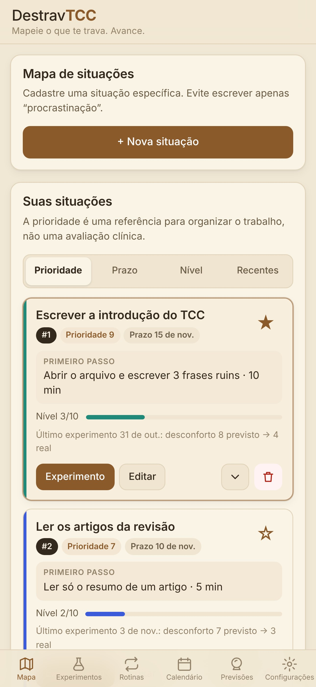
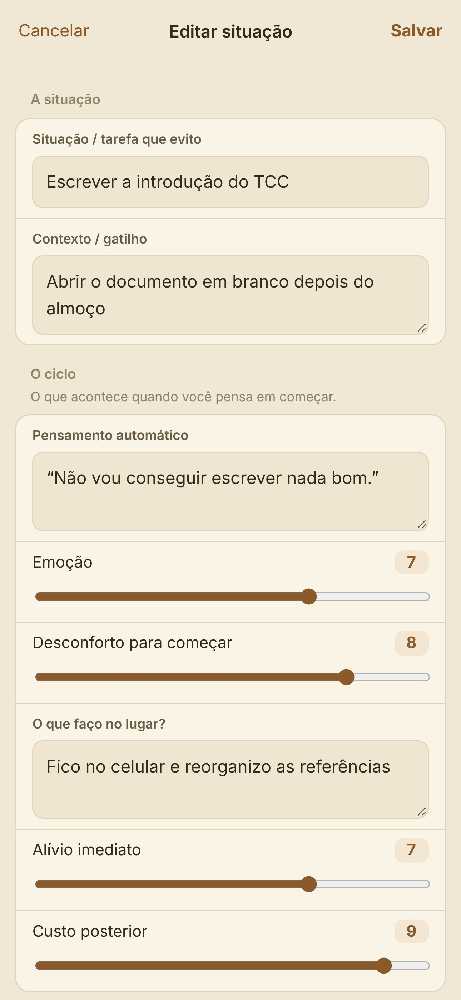
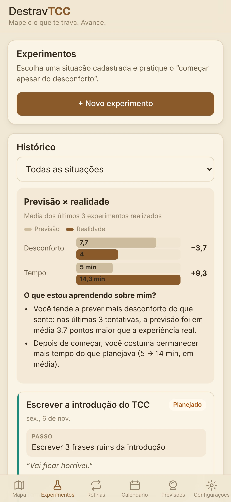
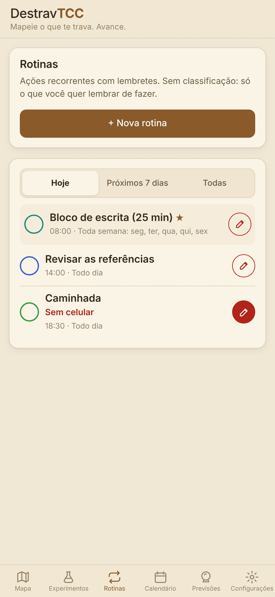
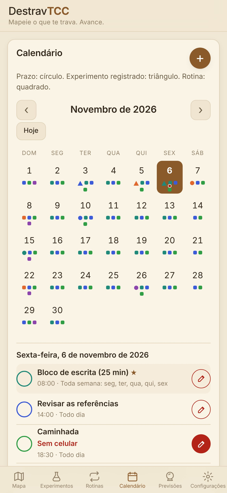
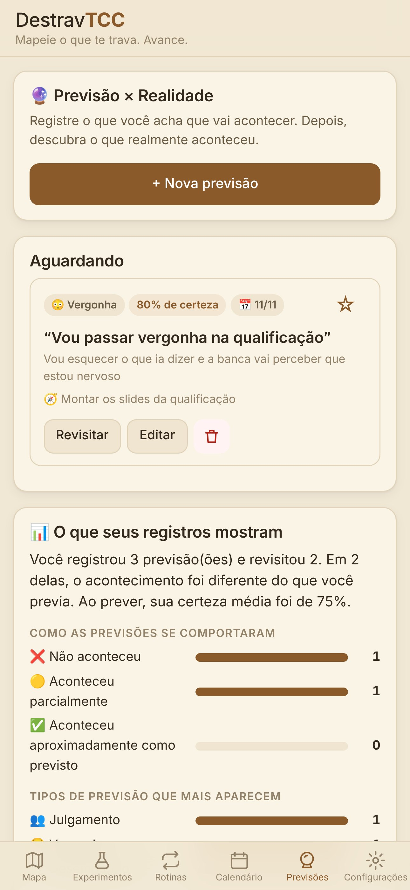
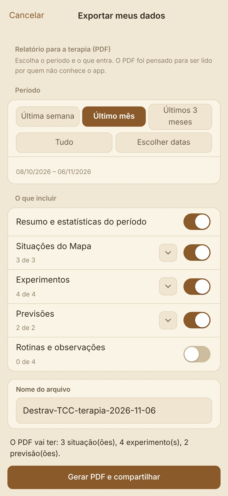
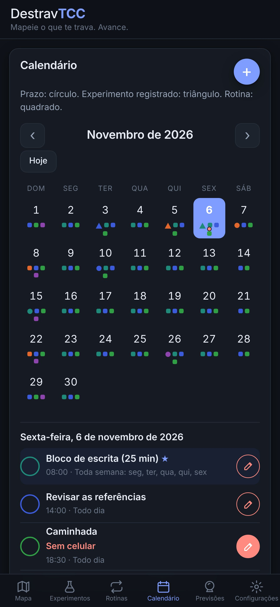

Destrav TCC
Mapeie o que te trava. Avance.
Transforme “eu procrastino” em situações concretas, entenda o ciclo que mantém a esquiva e treine começar — um primeiro passo de cada vez. Com experimentos comportamentais, previsão × realidade, rotinas, calendário e um relatório em PDF para levar à terapia. Tudo offline, no iPhone, no iPad ou no Android.

Não é mais uma lista de tarefas
O Destrav TCC trabalha o que acontece antes da tarefa: o desconforto de começar, a esquiva e o alívio que fazem o ciclo se repetir.
Mapa de situações
Cadastre situações concretas que você evita — “abrir o documento do TCC”, não só “procrastinar” — com contexto, pensamento automático e emoção.
Ciclo de esquiva
Registre o que você faz no lugar, o alívio imediato e o custo depois. O ciclo que mantém a procrastinação fica visível.
Hierarquia de 0 a 10
Cada situação ganha nível, prioridade e um primeiro passo mínimo. Você sobe um degrau quando ficar fácil e desce quando sempre evitar.
Experimentos comportamentais
Planeje o passo, preveja o desconforto e depois registre o que de fato aconteceu. O app compara previsto × real e mostra o que você está aprendendo.
Previsão × Realidade
Escreva o que você acha que vai acontecer — “vou passar vergonha” — e, na data, revisite. Com o tempo você vê o quanto suas previsões erram.
Rotinas com lembretes
Ações recorrentes — diárias, semanais, quinzenais ou personalizadas — com alertas, observação por dia e marcação de feito.
Calendário integrado
Prazos, experimentos e rotinas no mesmo calendário. Toque num dia para ver tudo e adicionar algo, inclusive em dias passados.
Relatório para a terapia
Gere um PDF organizado, com período e itens escolhidos, para levar à sua psicóloga, terapeuta ou médico — feito para quem não conhece o app.
Lembretes de início
Notificações para tentar começar a situação escolhida, nos horários que você definir.
Temas e idiomas
Tema sépia, claro ou escuro. Português, inglês e espanhol.
100% offline
Sem cadastro, sem login, sem servidor. Tudo funciona sem internet.
Seus dados ficam com você
Tudo fica salvo só no aparelho. Backup e relatórios saem apenas quando você exporta e escolhe com quem compartilhar.
Mapear → hierarquizar → experimentar → avançar
O alvo inicial é treinar o começar, não maximizar a produtividade. A tarefa deve gerar algum desconforto, mas continuar executável.
Mapear
Liste situações concretas que você evita e o que acontece quando pensa em começar.
Hierarquizar
Dê a cada situação um nível de 0 a 10. O app calcula uma prioridade para organizar o trabalho.
Escolher um primeiro passo
Um passo pequeno o bastante para ser feito mesmo com desconforto: “abrir o arquivo e escrever 3 frases”.
Experimentar
Preveja quanto desconforto vai sentir e quanto tempo vai durar. Depois, faça.
Registrar e aprender
Anote o que aconteceu. O app compara previsto × real e mostra seus padrões.
Avançar
Ficou fácil e consistente? Suba um degrau. Sempre evita? Desça um. Um passo de cada vez.
O aplicativo em ação
Do mapa de situações ao relatório para a terapia — exemplos com dados fictícios de quem está escrevendo um TCC.







Procrastinar não é preguiça. É um ciclo.
Tarefa → desconforto → esquiva → alívio imediato → custo posterior → mais chance de esquivar de novo. O Destrav TCC foi feito para tornar esse ciclo visível e treinar, aos poucos, o começar apesar do desconforto.
Ele organiza conceitos usados na Terapia Cognitivo-Comportamental — automonitoramento, hierarquia, exposição gradual e experimentos comportamentais — numa ferramenta simples para o dia a dia, do TCC da faculdade à tese, ao trabalho ou aos estudos.
Os registros são seus. Quando fizer sentido, gere um relatório e leve à sua psicóloga, terapeuta ou médico.
Aviso importante
O Destrav TCC é uma ferramenta de automonitoramento baseada em conceitos de TCC. Não faz diagnóstico, não é tratamento e não substitui a avaliação ou o acompanhamento de um profissional de saúde mental. As notas de 0 a 10 são registros seus, não uma escala clínica validada.
Se você estiver em sofrimento intenso ou pensando em se machucar, procure ajuda: no Brasil, o CVV atende 24 horas pelo telefone 188 ou em cvv.org.br; em emergência, ligue 192 (SAMU).
Destrave o primeiro passo
Em breve na App Store e no Google Play. Tudo funciona offline e fica salvo no seu aparelho.